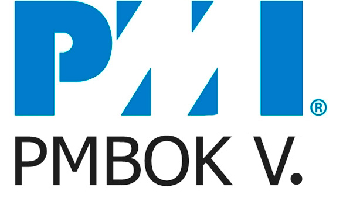

PMBOK

Publicada inicialmente por el Instituto Nacional Estadounidense de Estándares en 1987, la guía PMBOK es un instrumento, el cual fue desarrollado por el Project Manager Institute (PMI), que establece un criterio de buenas prácticas, normas, estándares relacionados con la gestión, la administración y la dirección de proyectos, mediante la implementación de técnicas y herramientas que permiten identificar un conjunto de 47 procesos distribuidos en 5 macroprocesos generales.